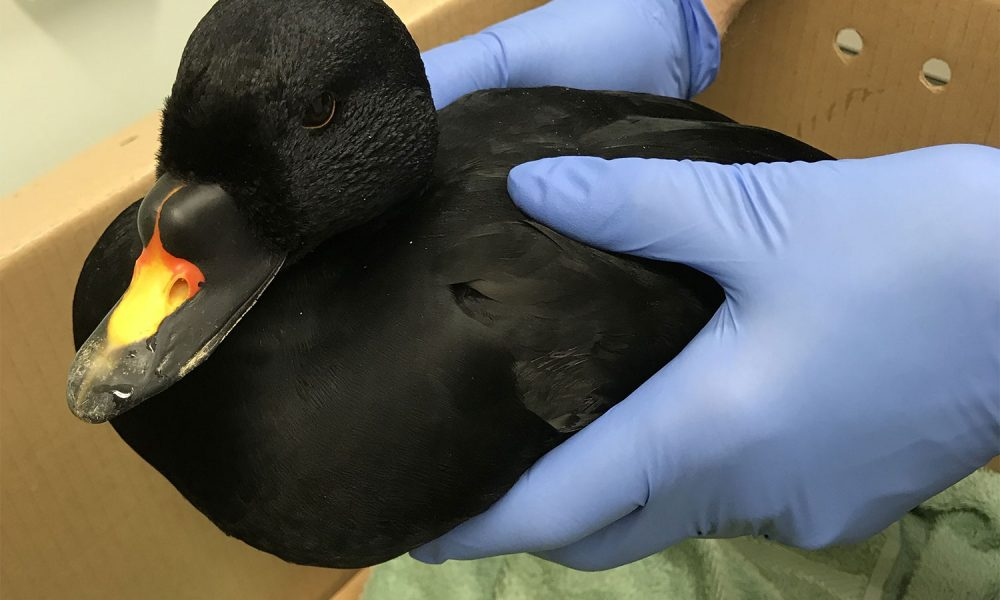
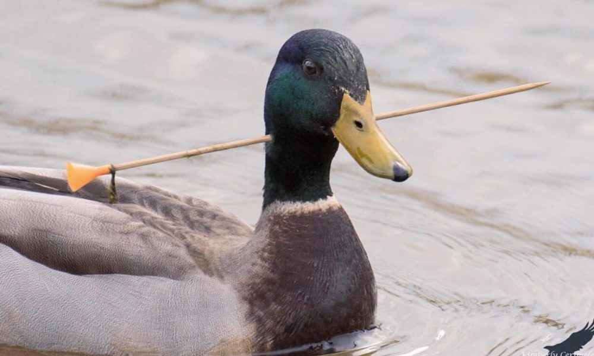

Thông tin về loài vịt

Vịt là tên gọi phổ thông cho một số loài chim thuộc họ Vịt (Anatidae) trong bộ Ngỗng (Anseriformes). Các loài này được chia thành một số phân họ trong toàn bộ các phân họ thuộc họ Anatidae. Vịt chủ yếu là một loài chim nước, sống được ở cả vùng nước ngọt lẫn nước mặn, có kích thước nhỏ hơn so với những loài bà con của chúng là ngan, ngỗng, và thiên nga.
Vịt có chiếc mỏ dẹp rất lợi hại trong việc bắt các loài sinh vật nhỏ sống dưới nước như thực vật thủy sinh, côn trùng, các động vật lưỡng cư, động vật thân mềm có kích thước nhỏ như sò hến…; ngoài ra, cỏ, các loài thực vật dưới nước cũng là thức ăn khoái khẩu của loài vịt.
Tuy nhiên, đôi lúc, vịt cũng thường hay quấy nhiễu những "người họ hàng" xung quanh như chim lặn, gà nước, sâm cầm...

Phần lớn loài vịt thường không bay được vào thời kỳ thay lông, chúng phải nhờ những bà con bảo vệ, cung cấp đầy đủ thức ăn trong suốt thời gian này. Để an toàn hơn nữa, loài vịt có thói quen di trú trước khi bước vào gian đoạn thay lông.
Một vài loài vịt sinh sản ở những vùng ôn hòa, Bắc Cực, thường di cư; số khác ở vùng nhiệt đới cũng có thói quen này, tuy nhiên tất cả các loài vịt đều có tập tính này. Loài vịt đặc trưng ở Úc, nơi có những cơn mưa lớn thất thường, rất thích đến ở những hồ, ao nhỏ để tránh các cơn mưa nặng hạt.